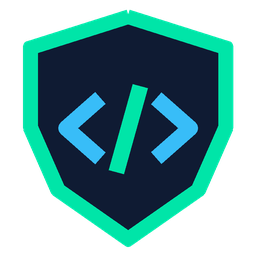
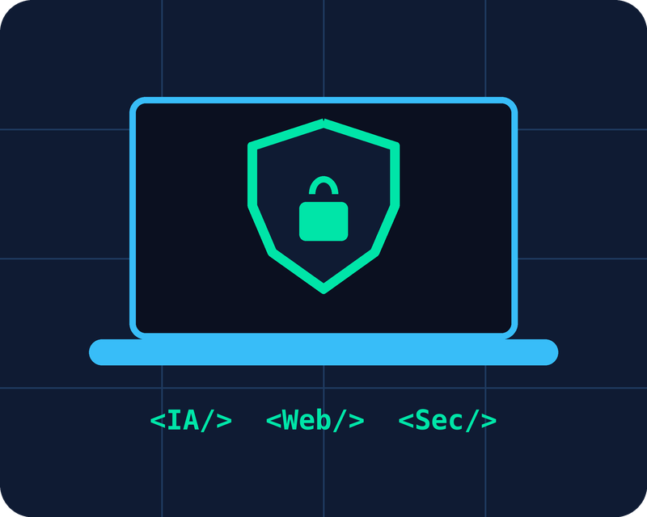
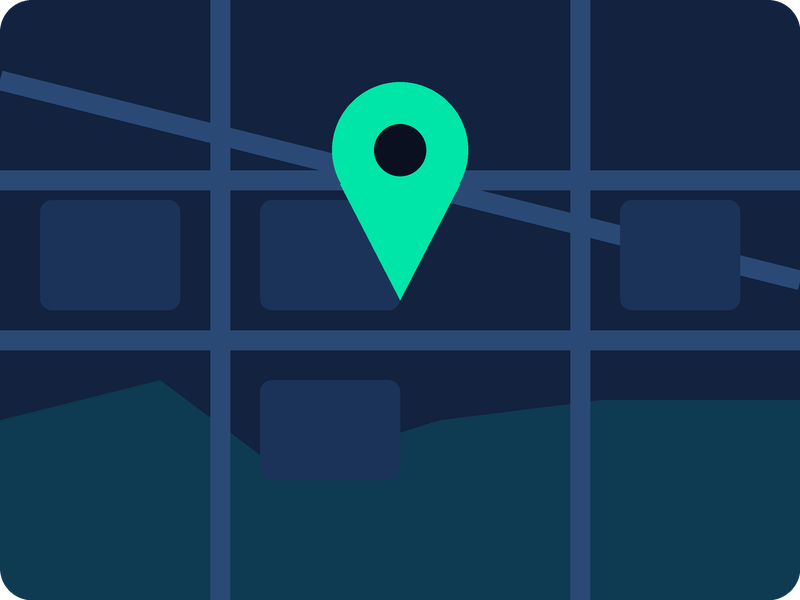

Inteligência Artificial
Novidades sobre modelos, ferramentas e como a IA está transformando o dia a dia de quem programa.


Sou estudante do 2° período de Engenharia de Software pela UGV e gosto muito de tecnologia e jogos. Esta página está focada principalmente em mostrar notícias do mundo de tecnologia, envolvendo IA, desenvolvimento Web e segurança da informação.
Novidades sobre modelos, ferramentas e como a IA está transformando o dia a dia de quem programa.
Dicas de HTML, CSS, JavaScript e frameworks, além de tendências do mercado de desenvolvimento.
Alertas de vulnerabilidades, golpes digitais e boas práticas para proteger seus dados e sistemas.
Quer receber as principais notícias sobre IA, programação e segurança da informação? Entre em contato comigo e fale sobre os temas que você mais gosta.
Entrar em contato
Endereço: Rua Exemplo, 123 – Centro
Cidade: União da Vitória – PR
CEP: 84600-000
Referência: Próximo à UGV
Atendimento: Segunda a sexta, das 8h às 18h
É o conjunto de práticas para proteger dados e sistemas contra acessos indevidos, vazamentos e ataques. Ela se apoia em três pilares: confidencialidade, integridade e disponibilidade.
A IA pode sugerir códigos, explicar erros, automatizar tarefas repetitivas e ajudar nos estudos. Mesmo assim, é importante entender o que o código faz e revisar tudo antes de usar.
O caminho mais comum é aprender HTML para a estrutura, CSS para o visual e JavaScript para a interatividade. Depois vale praticar com pequenos projetos, como este site.
Use senhas longas e diferentes para cada conta, de preferência com um gerenciador de senhas, e ative a verificação em duas etapas sempre que o serviço oferecer.